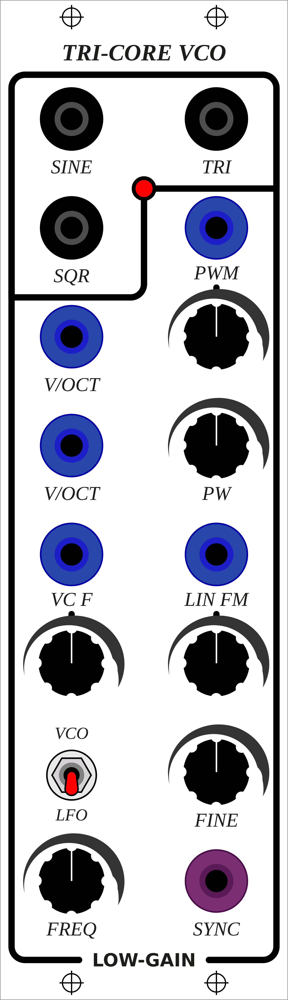

Tri-Core VCO
Triangle-Core VCO · LGE130
A stable triangle-core VCO with sine, triangle and pulse outputs, exponential and linear FM, PWM, sync and a VCO / LFO range switch.
- Design
- Low-Gain Electronics (LGE130)
- Function
- Oscillator
- Panel widths
- 2", 17"
- Build options
- 1
Panels in this repo


How it works
The heart of the oscillator is a triangle core: a capacitor is charged and discharged by a current that rises exponentially with the control voltage, so one volt more doubles the frequency. A comparator flips the direction each time the ramp hits its limits, giving a clean triangle wave and, from the comparator itself, a square wave.
The exponential converter uses a matched transistor pair kept stable by a 2k tempco resistor, which cancels the pair's drift with temperature; that is what makes the V/OCT tracking hold over five or six octaves. Trimmers set the V/OCT scale and the high-frequency tracking.
The sine is shaped from the triangle by a JFET waveshaper, with trimmers for its roundness and symmetry. The pulse output compares the triangle against a level set by PW and the PWM input, so the pulse width can be swept.
EXP FM (VC F on the panel) adds to the pitch exponentially, the musical way for vibrato and pitch modulation. LIN FM changes the frequency linearly, which keeps the pitch centred under audio-rate modulation for clean FM timbres. SYNC resets the core to lock it to another oscillator. The VCO / LFO switch drops the range for slow modulation, and the bi-colour LED shows the triangle swinging up and down.
Controls and jacks
| Name | Type | What it does |
|---|---|---|
| SINE, TRI, SQR (PULSE) | outputs | The three waveforms. |
| V/OCT (x2) | inputs | Summed pitch inputs, 1 volt per octave. |
| VC F (EXP FM) + attenuator | input + knob | Exponential frequency modulation. |
| LIN FM + attenuator | input + knob | Linear frequency modulation. |
| PWM + knob | input + knob | Pulse-width modulation amount. |
| PW | knob | Manual pulse width. |
| FREQ, FINE | knobs | Coarse and fine pitch. |
| VCO / LFO | switch | Audio or low-frequency range. |
| SYNC | input | Hard sync. |
| LED | indicator | Shows the triangle (red / green). |
Build options
Low-Gain LGE130 Tri-Core VCO
- Offered as
- Assembled module (white panel), the LGE130W panel, or DIY PCBs
- Format
- 4U Serge, Loudest Warning-style mounting; PCB 6" x 2"
- Schematic
- availableLGE130 main and LGE130C I/O schematics, layouts with designators (Google Drive, linked from the product page)
- BOM
- availableLGE130 BOM (main + I/O) and Low-Gain's own Mouser cart; Mouser upload file in the BOM section below
- LGE130 main board: The core, expo converter, sine shaper, regulators (+/-5 V) and output buffers.
- LGE130C I/O board: Jacks, the six 9mm pots, the VCO / LFO switch and the bi-colour LED; it bolts to the main board with 2.54mm headers.
The Mouser file follows Low-Gain's own Mouser cart and adds what the cart leaves out (TL072s, the 9mm pots, switch, jacks, film caps). It uses the through-hole transistor option (Q3-Q8) instead of the SMD dual pairs Q1 / Q2.
The CA3080 and the 2k tempco resistor are not sold by Mouser; see the 'not at Mouser' file.
The panel in this repo is drawn from the user's own Tri-Core, so its jack and pot positions follow the LGE130C I/O board layout; still check them against the board before drilling.
Ken Stone's Serge-derived designs may be built for personal use only; Serge Tcherepnin keeps all rights to his circuits. Schematics, parts lists and PCBs belong to their designers and sellers, so these pages link to them rather than copying them.
Bill of materials
Spreadsheet: tri-core-vco.csv (CSV; opens in Excel, Numbers or Google Sheets). The Mouser columns are there to fill in with order links.
Order from Mouser: tri-core-vco__lge130.csv (51 lines, about $69.94 at single-unit prices). Upload it at Mouser's BOM tool (it reads the Mouser and manufacturer part number columns). Parts Mouser doesn't stock are listed in tri-core-vco__lge130_not_at_mouser.csv.
All builds (7 lines)
| Section | Type | Value / part | Qty | Notes |
|---|---|---|---|---|
| Front panel (Tri-Core VCO (2")) | Panel hardware | Banana jack, black | 3 | 4 mm |
| Front panel (Tri-Core VCO (2")) | Panel hardware | Banana jack, blue | 5 | 4 mm |
| Front panel (Tri-Core VCO (2")) | Panel hardware | Banana jack, purple | 1 | 4 mm |
| Front panel (Tri-Core VCO (2")) | Panel hardware | LED | 1 | |
| Front panel (Tri-Core VCO (2")) | Panel hardware | Potentiometer + knob | 6 | value from the board BOM |
| Front panel (Tri-Core VCO (2")) | Panel hardware | Toggle switch | 1 | type from the board BOM |
| Front panel (Tri-Core VCO (2")) | Panel hardware | Knob | 6 | one per pot |
Low-Gain LGE130 Tri-Core VCO (57 lines)
| Section | Type | Value / part | Qty | Notes |
|---|---|---|---|---|
| Low-Gain LGE130 main board + LGE130C I/O board | Ceramic 100nF X7R 50V, 0805 SMD | 18 | Main C1-C4,C6,C8-C13,C15,C23,C24; I/O C2-C5 | |
| Low-Gain LGE130 main board + LGE130C I/O board | Electrolytic 10uF 50V | 4 | Main C5,C7,C14,C17 | |
| Low-Gain LGE130 main board + LGE130C I/O board | Ceramic 1nF C0G 50V, 5mm | 2 | Main C16,C19 | |
| Low-Gain LGE130 main board + LGE130C I/O board | Ceramic 47pF C0G 100V, 5mm | 1 | Main C20 | |
| Low-Gain LGE130 main board + LGE130C I/O board | Film 100nF 63V, 5mm | 1 | Main C21 | |
| Low-Gain LGE130 main board + LGE130C I/O board | Film 220nF 100V, 5mm | 1 | I/O C18 (main C18 is jumpered with the I/O board) | |
| Low-Gain LGE130 main board + LGE130C I/O board | Ceramic 33pF C0G 100V, 5mm | 1 | I/O C1 | |
| Low-Gain LGE130 main board + LGE130C I/O board | Small-signal diode | 2 | Main D1,D5 | |
| Low-Gain LGE130 main board + LGE130C I/O board | NPN transistor | 4 | Main Q3,Q6,Q7,Q8 (through-hole option; Q1/Q2 SMD duals left out) | |
| Low-Gain LGE130 main board + LGE130C I/O board | PNP transistor | 2 | Main Q4,Q5 | |
| Low-Gain LGE130 main board + LGE130C I/O board | N-channel JFET (replaces MPF102) | 1 | Main Q9 | |
| Low-Gain LGE130 main board + LGE130C I/O board | Resistor 10R 1/4W 1% | 2 | Main R1,R2 | |
| Low-Gain LGE130 main board + LGE130C I/O board | Resistor 100k 0.1% 25ppm | 2 | Main R3,R4 | |
| Low-Gain LGE130 main board + LGE130C I/O board | Resistor 100k 1/4W 1% | 11 | Main R5,R6,R7,R14,R17,R35,R42; I/O R1-R4 | |
| Low-Gain LGE130 main board + LGE130C I/O board | Resistor 2M4 1/4W 1% | 1 | Main R8 | |
| Low-Gain LGE130 main board + LGE130C I/O board | Resistor 2M2 1/4W 1% | 2 | Main R9,R38 | |
| Low-Gain LGE130 main board + LGE130C I/O board | Resistor 1M2 1/4W 1% | 1 | Main R11 | |
| Low-Gain LGE130 main board + LGE130C I/O board | Resistor 16k 1/4W 1% | 1 | Main R12 | |
| Low-Gain LGE130 main board + LGE130C I/O board | Resistor 470k 1/4W 1% | 1 | Main R13 | |
| Low-Gain LGE130 main board + LGE130C I/O board | Resistor 47R 1/4W 1% | 1 | Main R15 | |
| Low-Gain LGE130 main board + LGE130C I/O board | Resistor 820R 1/4W 1% | 1 | Main R16 | |
| Low-Gain LGE130 main board + LGE130C I/O board | Resistor 10k 1/4W 1% | 5 | Main R18,R20,R25,R26,R27 | |
| Low-Gain LGE130 main board + LGE130C I/O board | Resistor 27k 1/4W 1% | 1 | Main R19 | |
| Low-Gain LGE130 main board + LGE130C I/O board | Resistor 110k 1/4W 1% | 1 | Main R21 | |
| Low-Gain LGE130 main board + LGE130C I/O board | Resistor 18k 1/4W 1% | 2 | Main R22,R31 | |
| Low-Gain LGE130 main board + LGE130C I/O board | Resistor 24k 1/4W 1% | 1 | Main R23 | |
| Low-Gain LGE130 main board + LGE130C I/O board | Resistor 3k92 1/4W 1% | 1 | Main R24 | |
| Low-Gain LGE130 main board + LGE130C I/O board | Resistor 2k21 1/4W 1% | 3 | Main R28,R29,R41 | |
| Low-Gain LGE130 main board + LGE130C I/O board | Resistor 390R 1/4W 1% | 1 | Main R30 | |
| Low-Gain LGE130 main board + LGE130C I/O board | Resistor 14k 1/4W 1% | 2 | Main R32,R33 | |
| Low-Gain LGE130 main board + LGE130C I/O board | Resistor 1k 1/4W 1% | 3 | Main R61 (R34 jumpered with the I/O board); I/O R6,R7 | |
| Low-Gain LGE130 main board + LGE130C I/O board | Resistor 360k 1/4W 1% | 1 | Main R36 | |
| Low-Gain LGE130 main board + LGE130C I/O board | Resistor 150k 1/4W 1% | 1 | Main R37 | |
| Low-Gain LGE130 main board + LGE130C I/O board | Resistor 2k 1/4W 1% | 2 | Main R39,R40 | |
| Low-Gain LGE130 main board + LGE130C I/O board | Resistor 5k62 1/4W 1% (LED brightness, to taste) | 1 | I/O R5 | |
| Low-Gain LGE130 main board + LGE130C I/O board | Trimmer 100R multi-turn (V/OCT) | 1 | Main TR1 | |
| Low-Gain LGE130 main board + LGE130C I/O board | Trimmer 100k multi-turn (HI FREQ, SINE RND) | 2 | Main TR2,TR3 | |
| Low-Gain LGE130 main board + LGE130C I/O board | Trimmer 50k multi-turn (SINE SYM) | 1 | Main TR4 | |
| Low-Gain LGE130 main board + LGE130C I/O board | 4-pin locking power header (0.156in) | 1 | Main U1 PWR | |
| Low-Gain LGE130 main board + LGE130C I/O board | JFET op-amp, dual | 4 | Main U2-U4; I/O U1 | |
| Low-Gain LGE130 main board + LGE130C I/O board | JFET op-amp, single | 2 | Main U8; I/O U3 | |
| Low-Gain LGE130 main board + LGE130C I/O board | +5V regulator, TO-92 | 1 | Main U5 | |
| Low-Gain LGE130 main board + LGE130C I/O board | -5V regulator, TO-92 | 1 | Main U6 | |
| Low-Gain LGE130 main board + LGE130C I/O board | Bi-colour LED red/green, 3mm | 1 | I/O D1 | |
| Low-Gain LGE130 main board + LGE130C I/O board | LED lens | 1 | I/O | |
| Low-Gain LGE130 main board + LGE130C I/O board | 9mm pot B100K | 6 | I/O VR1-VR6 | |
| Low-Gain LGE130 main board + LGE130C I/O board | Mini toggle SPDT on-on (VCO / LFO) | 1 | I/O SW | |
| Low-Gain LGE130 main board + LGE130C I/O board | Banana jack, black | 3 | SINE, TRI, PULSE outputs | |
| Low-Gain LGE130 main board + LGE130C I/O board | Banana jack, blue | 5 | V/OCT x2, EXP FM (VC F), LIN FM, PWM | |
| Low-Gain LGE130 main board + LGE130C I/O board | Banana jack, violet | 1 | SYNC | |
| Low-Gain LGE130 main board + LGE130C I/O board | Standoff M3 x 11mm | 4 | Board mounting | |
| Low-Gain LGE130 main board + LGE130C I/O board | Not at Mouser | CA3080E OTA | 1 | Main U7. Obsolete, not at Mouser: Synthcube, Thonk or another synth-parts supplier (AS3080 / LM3080 also work). |
| Low-Gain LGE130 main board + LGE130C I/O board | Not at Mouser | 2K tempco resistor 3300-3500ppm | 1 | Main R10. Synth DIY shops (Thonk, Synthcube, Modular Addict). In a pinch Low-Gain suggests two 1k in series. |
| Low-Gain LGE130 main board + LGE130C I/O board | Not at Mouser | Knobs (Davies 1900H style) | 6 | Synthcube, Thonk, Modular Addict |
| Low-Gain LGE130 main board + LGE130C I/O board | Not at Mouser | M3x6 button-head screws, M3 split washers | 8 | Hardware |
| Low-Gain LGE130 main board + LGE130C I/O board | Not at Mouser | 2.54mm male + female 40-pin headers | 1 | Board-to-board connection; any breakaway header |
| Low-Gain LGE130 main board + LGE130C I/O board | Not at Mouser | LGE130 + LGE130C PCBs | 1 | Low-Gain Electronics |
Panel hardware
Front-panel parts for each panel in this repo, counted from the panel files. Board parts (resistors, ICs, trimmers) are in each build option's own BOM.
Tri-Core VCO (2")
| Part | Qty | Note |
|---|---|---|
| Banana jack, black | 3 | 4 mm |
| Banana jack, blue | 5 | 4 mm |
| Banana jack, purple | 1 | 4 mm |
| LED | 1 | |
| Mounting screw | 4 | panel to rails |
| Potentiometer + knob | 6 | value from the board BOM |
| Toggle switch | 1 | type from the board BOM |